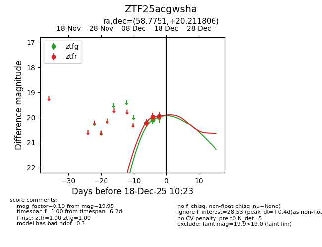
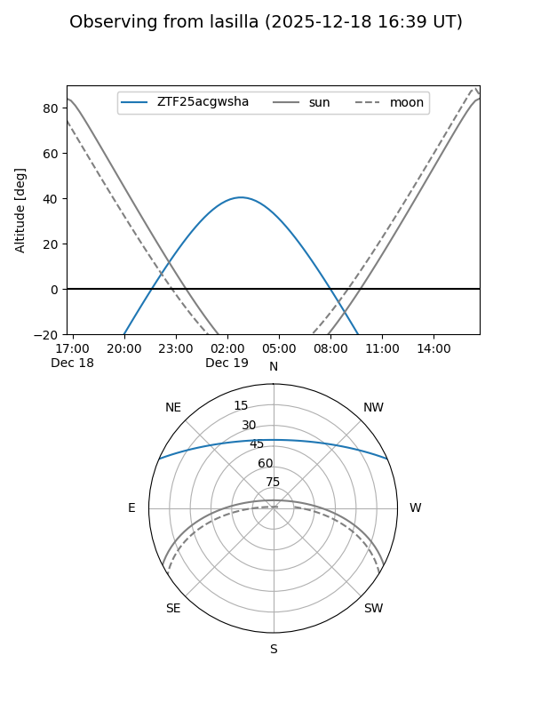
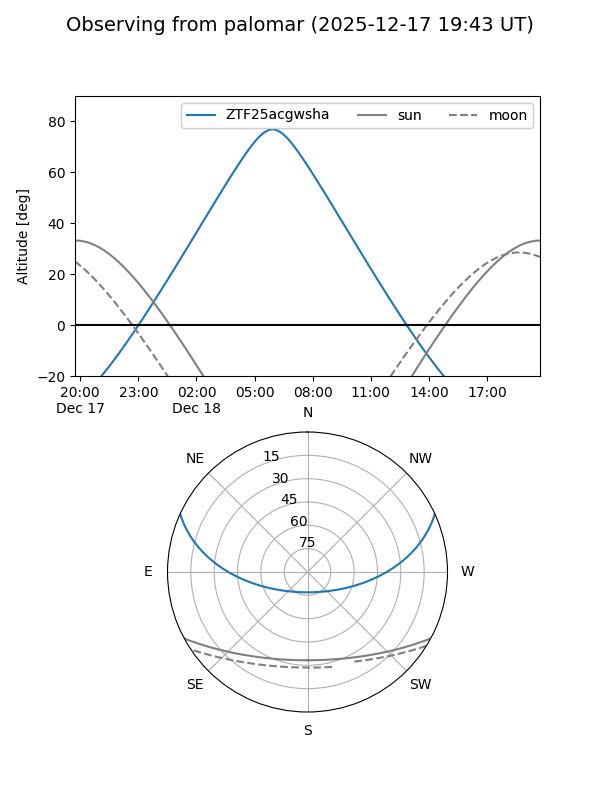
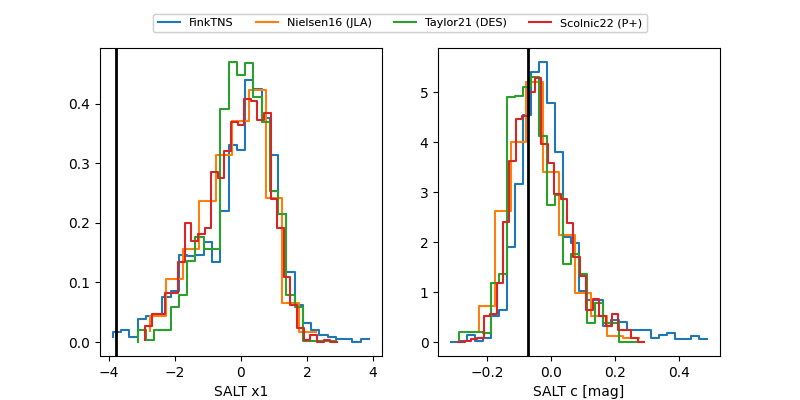

ZTF25acgwsha
Target ZTF25acgwsha at 2025-12-18 11:37
Aliases and brokers:
FINK: fink-portal.org/ZTF25acgwsha
Lasair: lasair-ztf.lsst.ac.uk/objects/ZTF25acgwsha
ALeRCE: alerce.online/object/ZTF25acgwsha
alt names
ZTF25acgwsha (ztf,fink_ztf)
Coordinates:
equatorial (ra, dec) = 58.7751,+20.21181
equatorial (HMS+DMS) = 03:55:06.03,+20:12:42.50
galactic (l, b) = (171.0148,-25.05658)
Photometry
last ztfg=19.99, ztfr=19.84
2 ztfg, 4 ztfr detections
Lightcurve

Visibility


Additional plots
